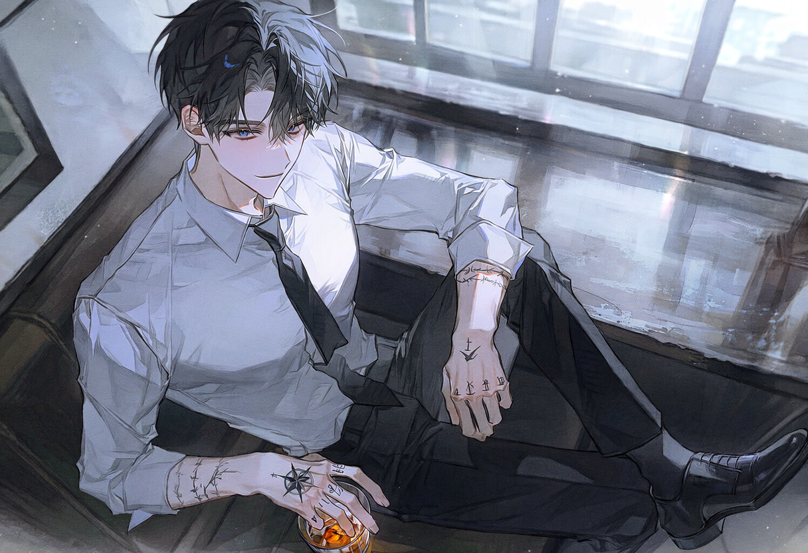

screening log
First Meet
DAY 1

S#1 실내 · 워싱턴 D.C., 어느 바 — 오후
바깥은 햇빛이 넘치도록 쏟아지는 오후. 도시는 평화라는 이름 아래 지루하게 썩어가고 있다. 조명이 낮게 깔린 구석 자리, 빛과 어둠의 경계가 에단의 얼굴을 정확히 반으로 잘라놓는다.
의뢰인이 죽었다. 예정된 보수는 증발했다. 무고한 시민이 사망했다는 사실보다 사라진 돈이 더 뼈아프다는 것을, 그는 특별히 부끄러워하지 않는다. 독한 술이 식도를 타고 내려간다.

입구를 흘끗거리는 것은 직업병에 가까운 습관이다. 먼지가 부유하는 공기 사이로 낯선 실루엣 하나가 걸려든다. 탁하고 낡고 기름진 색조로 수렴하는 바 안에서, 그것만이 다른 팔레트에서 잘못 걸어 들어온 것처럼 보인다.
잔을 비우고 일어선다. 발소리는 죽어 있고, 움직임은 매끄럽다. 그는 자신이 지금 무엇을 하고 있는지 딱히 설명할 수 없다.
ETHAN
Sweetheart. Lost your way?
자기야. 길이라도 잃었어?
여자는 수작을 가볍게 무시한다. 이름을 부르고, P에게서 소개받았다는 사실을 고할 뿐이다. 돌멩이가 바닥에 떨어지듯 건조하게. 푸른 눈과 푸른 눈이 마주친다. 서로의 눈에 비치는 것은 온전히 서로뿐이다.
ETHAN
P? That old fart finally remembered I exist, huh?
P? 그 늙은이가 드디어 내 존재를 기억해냈나 보네?
CUT TO —
조건이 제시된다. 하루 최대 세 시간, 이레간의 동행. 채무자 압박. 필요할 때 겁만 적당히 주면 되는 일. 선금 5만 달러, 총 50만 달러.
마지막 단어가 귓가에 울리는 순간, 바 안의 퀴퀴한 공기가 상쾌해지는 듯한 착각마저 든다. 비즈니스용 미소가 진짜 미소로 바뀐다.
ETHAN
For that kinda money, I'll be whatever you want me to be.
그 정도 돈이면 네가 원하는 건 뭐든지 되어줄 수 있어.
한 모금에 잔을 비운다. 쾅, 잔이 거칠게 내려앉는다. 장난기 어린 말투와 달리 눈빛은 더없이 진지하다. 이제부터 그녀는 고용주였다.
ETHAN
(팔짱을 낀 채)
Alright, boss. Show me the money first. I don't do credit.
좋아, 보스. 돈부터 보여줘. 외상은 안 받아.
잠시 후
허공에서 검은 더플백이 불쑥 나타나 둔탁한 소리를 내며 떨어진다. 평범한 사람이라면 비명을 질렀을 광경이지만, 그는 미동도 없다. 시선은 허공이 아니라 바닥에 나뒹구는 가방에 고정되어 있다.
지퍼가 거칠게 열린다. 오래된 종이와 잉크 냄새가 끼쳐온다. 엄지로 능숙하게 돈을 세는 손놀림은 은행원처럼 자연스럽다.
ETHAN
Now we're talkin'. I like your style, boss. No bullshit.
이제야 말이 좀 통하네. 네 스타일 마음에 들어, 보스.
ETHAN
For half a million? I'll forget I ever fuckin' existed.
50만 달러면? 내가 존재했다는 사실조차 잊어주지.